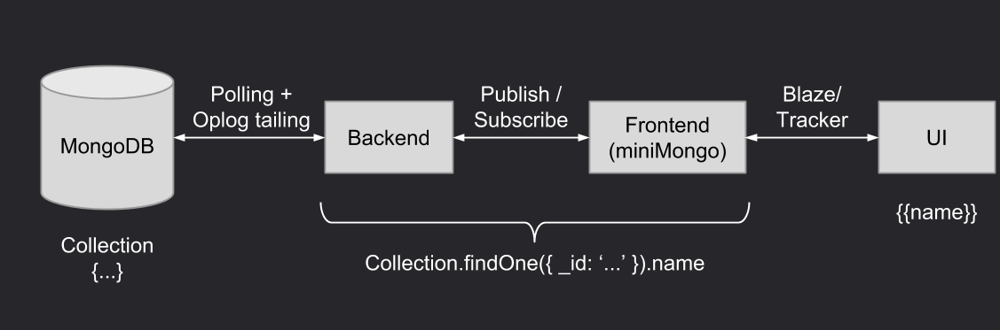

by Guillaume Monnet / @255kb
NodeJS, Express, Backbone/Angular, socket.io, MongoDB, Phonegap, Grunt, ...
Meteor.
Data is automatically kept synced everywhere:
> curl https://install.meteor.com/ | shCreate a new app:
> meteor create myapp
> cd myapp
> meteor
=> Started proxy.
=> Started MongoDB.
=> Started your app.
=> App running at: http://localhost:3000/Deploy on Meteor's servers (it's free!):
> meteor deploy→ myapp.meteor.com
> meteor deploy myapp.mydomain.com→ myapp.mydomain.com
Add platforms:
> meteor add-platform ios/androidTest on virtual devices:
> meteor run ios/androidBuild:
> meteor buildiOS requires Xcode, Android SDK will be automatically downloaded
Just add some packages:
accounts-base, accounts-password, accounts-ui, accounts-facebook, ...
Code updates are automatically pushed to clients
Triggers a page refresh (not for CSS)
A method can be replicated on client side in order to simulate the server call.
Meteor.methods({
myMethod: function(arg1, arg2) {
MyCollection.insert({name: arg1, value: arg2});
}
});
(for everything)
lib/ # common code
client/ # client code
client/template.html # templates always loaded first
client/lib/ # client code loaded first
client/main.html # 'main*' files always loaded last
server/ # server code
server/lib/ # server code loaded first
private/ # server assets library
public/favicon.ico # public files
Remove default 'autopublish' package
Use publish / subscribe
//SERVER
Meteor.publish('userMessages', function(userId){
return Messages.find({userId: userId});
});
//CLIENT
Meteor.subscribe('userMessages');//in a route or a template
//CLIENT
messagesSubscription = Meteor.subscribe('userMessages');
// in your template
if(messagesSubscription.ready()) {
//do something
}
// or in a Route
Router.route('/myroute', {
name: 'myroute',
waitOn: function() {
return Meteor.subscribe('userMessages');
}
});
e.g. use 'sort' on both client and server.
//SERVER
Meteor.publish('roomMessages', function(id){
//last ten messages
return Messages.find({roomId: id}, {sort: {createdAt: -1}, limit: 10});
});
//CLIENT
Messages.find({roomId: id}, {sort: {createdAt: 1}});
//SERVER
Meteor.methods({
myMethod: function(arg1, arg2) {
//do domething
}
});
//CLIENT
Meteor.call('myMethod', callback);
What about deny / allow?
//SERVER
Messages.allow({
insert: function (userId, doc) {
return true;
}
});
Just use the router on the server:
Router.route('/users', { where: 'server' })
.get(function () {
// GET /users
})
.post(function () {
// POST /users
})
.put(function () {
// PUT /users
});
→ Official tutorial
→ Other great resources (docs, books, forums, etc)